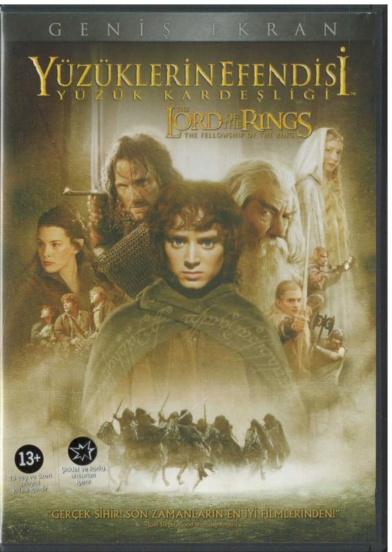

|  |
Yüzüklerin Efendisi: Kralın Dönüşü
Özet: Yüzüklerin Efendisi: Kralın Dönüşü, Tek Yüzük'ün yok edilmesi
için verilen mücadeleyi konu ediyor. Sauron'un orduları büyüdükçe
büyümektedirler. Frodo ve onun can dostu Sam, korku dolu bir
yolculuğun göbeğinde, korkunç Mordor'a adım adım yaklaşmaktadırlar.
Tek yüzük yok edilmelidir ve iyilik bunun için savaşmaya hazırdır.
Arka planda ise insan, elf ve cüce orduları, karanlık güçlerin
karşısında tüm eski düşmanlıklarına rağmen bir araya gelmişlerdir.
Hepsi birden küçücük bir Hobbit'in eline ve onun yeteneklerine
bakmaktadırlar. Orta Dünya'nın kaderi belli olmak üzeredir. Ancak
Tek Yüzük'ü sahiplenmek, kimi zaman taşıyanına daha cazip gelebilir.
Anasayfaya Dön!
|